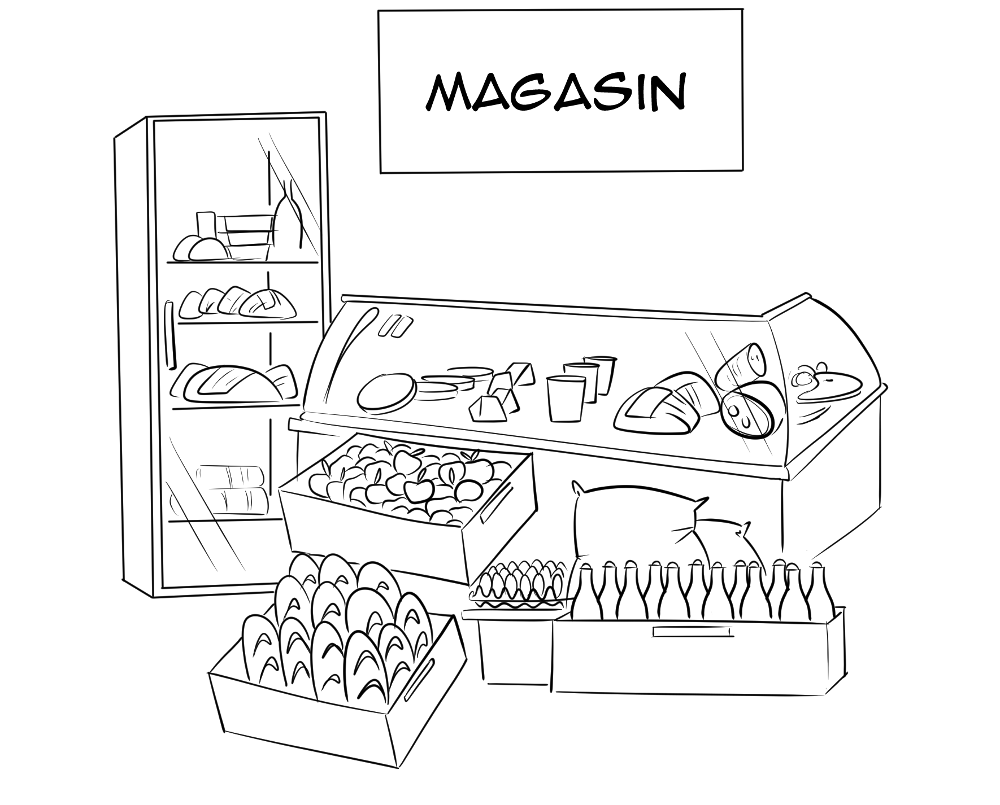
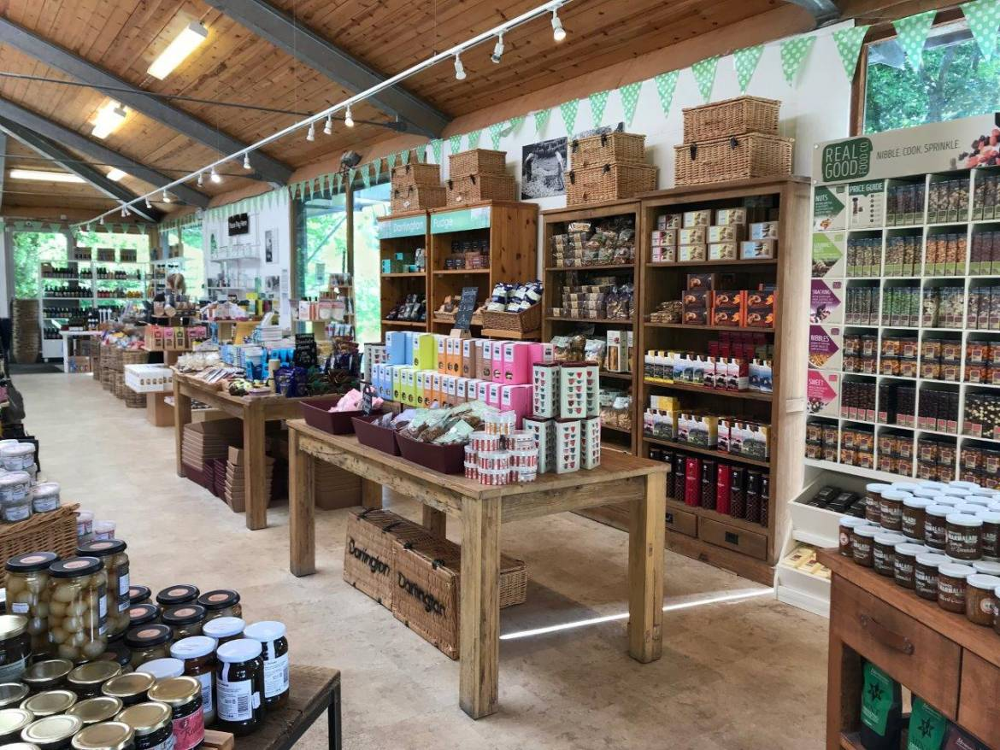
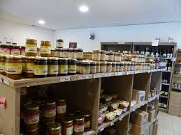
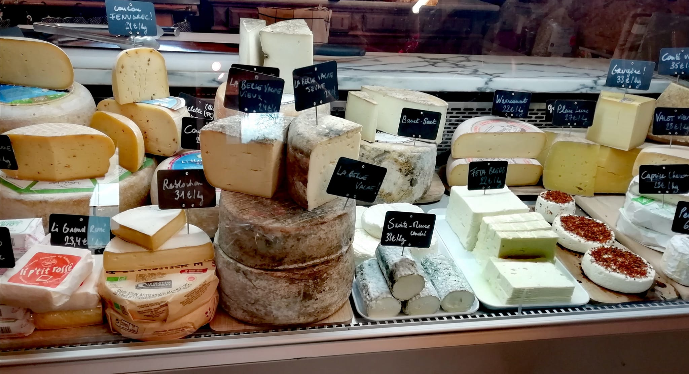

Un modèle de vente solidaire 🧺
La distribution de nos produits reflète nos valeurs de coopération et de proximité. Pour s'adapter aux besoins de chacun, nous avons imaginé un modèle de vente en deux temps.
En semaine, la ferme fonctionne au rythme de nos coopérateurs. Grâce à un système d'équivalent de paniers, nos membres les plus engagés peuvent venir récupérer leurs produits frais, réservés à l'avance. C'est notre façon de garantir une alimentation saine à ceux qui soutiennent le projet au quotidien, tout en limitant le gaspillage agricole.
Le samedi matin, la ferme s'ouvre à tous ! ☀️
Le week-end, l'ambiance change : notre magasin ouvre grand ses portes à tous le samedi matin ! Que vous soyez voisin, curieux ou gourmand de passage, c'est le moment idéal pour venir découvrir la ferme de Chevronsart.
Vous pourrez y flâner et faire vos emplettes sans réservation. C'est l'occasion parfaite de vous approvisionner en circuit court, de supprimer les intermédiaires industriels et de soutenir une agriculture locale qui rémunère justement ses producteurs.
L'abondance de notre terroir 🥖🧀🥩
Sur nos étals du samedi, vous retrouverez toute la diversité de notre ferme : le pain frais au levain de la boulangerie, nos fromages au lait cru, nos viandes et charcuteries artisanales, ainsi que les jus, cidres et fruits de notre verger au fil des saisons.
Plus qu'une simple boutique, c'est un véritable lieu d'échange. Nous sommes toujours derrière le comptoir pour vous accueillir, vous conseiller sur une recette ou vous raconter l'histoire de nos produits. Prendre le temps de discuter, c'est aussi ça le charme du circuit court !


